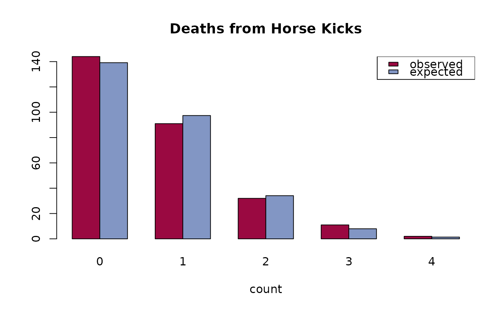

PoissonCI.RdComputes the confidence intervals of a poisson distributed variable's lambda. Several methods are implemented, see details.
PoissonCI(x, n = 1, conf.level = 0.95, sides = c("two.sided","left","right"), method = c("exact", "score", "wald", "byar"))
| x | number of events. |
|---|---|
| n | time base for event count. |
| conf.level | confidence level, defaults to 0.95. |
| sides | a character string specifying the side of the confidence interval, must be one of |
| method | character string specifing which method to use; can be one out of
|
The Wald interval uses the asymptotic normality of the test statistic.
Byar's method is quite a good approximation. Rothman and Boice (1979) mention that these limits were first proposed by Byar (unpublished).
A vector with 3 elements for estimate, lower confidence intervall and upper for the upper one.
Agresti, A. and Coull, B.A. (1998) Approximate is better than "exact" for interval estimation of binomial proportions. American Statistician, 52, pp. 119-126.
Rothman KJ, Boice JD, Jr. (1979) Epidemiologic Analysis with a Programmable Calculator (NIH Publication 79-1649). Washington DC: US Government Printing Office.
Garwood, F. (1936) Fiducial Limits for the Poisson distribution. Biometrika 28:437-442.
https://www.ine.pt/revstat/pdf/rs120203.pdf
Andri Signorell <andri@signorell.net>
# the horse kick example count <- 0:4 deaths <- c(144, 91, 32, 11, 2) n <- sum(deaths) x <- sum(count * deaths) lambda <- x/n PoissonCI(x=x, n=n, method = c("exact","score", "wald", "byar"))#> est lwr.ci upr.ci #> exact 0.7 0.6054271 0.8051570 #> score 0.7 0.6086218 0.8050977 #> wald 0.7 0.6020018 0.7979982 #> byar 0.7 0.6070833 0.8032497exp <- dpois(0:4, lambda) * n barplot(rbind(deaths, exp * n/sum(exp)), names=0:4, beside=TRUE, col=c(hred, hblue), main = "Deaths from Horse Kicks", xlab = "count")## SMR, Welsh Nickel workers PoissonCI(x=137, n=24.19893)#> est lwr.ci upr.ci #> [1,] 5.661407 4.753125 6.692709